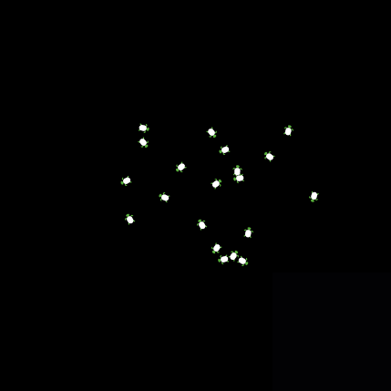
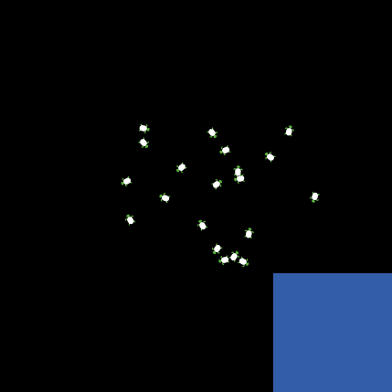
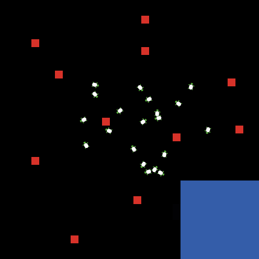
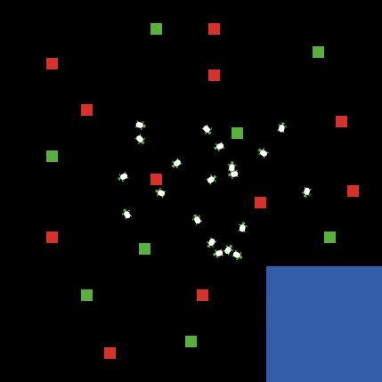

Tortues malades en Netlogo Laboratoire III
Hector SatizabalJulien Rebetez
I. Critères d'évaluation
Une fois le laboratoire terminé, envoyez le fichier .nlogo par email à jeremie.despraz@heig-vd.ch (pas de fichier texte ou de document word !).
I. Objectifs à évaluer
- Les instructions if et ifelse
- Variables d'état
II. Exercice
- Créer une population de 20 tortues

- Maison: Dessinez un carré de 10x10 patches bleus au coin en bas à droite de l'environnement

- Maladie: Dessinez quelques patches rouges au hasard dans l'environnement

- Médicament: Dessinez quelques patches verts au hasard dans l'environnement

- Écrire un programme qui fait bouger aléatoirement une vingtaine de tortues:
- Lorsqu'une tortue trouve la maladie (zone rouge), elle devient malade (change sa couleur en rouge)
- Si une tortue malade (rouge) se retrouve dans une zone verte, elle guérit (elle devient verte)
- Dès qu'une tortue arrive à la maison (zone bleue), elle s'arrête (stop), mais seulement si elle n'est pas malade
- Associer vos procedures à des boutons, par exemple: un bouton pour effacer et créer les tortues, un bouton pour dessiner l'environnement (maison, maladie, médicament) et un bouton pour lancer la simulation.
HEIG-VD, 2017